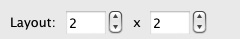
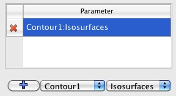

Comparative Views
Introduction
ParaView provides a collection of views that can be used to display a set of visualization on a regular grid. These views are referred to as "Comparative" Views. Comparative Views can be used to display results from a parameter study or to perform parameter studies within ParaView.
Quick Start
We will start with a short tutorial. Later sections will describe Comparative Views in more detail. First start a Wavelet source. Next apply a Contour filter. Then close the default 3D view by clicking on the small x on the upper right corner of the view.
This should bring up an empty view with several buttons for selecting the view type. Select 3D View (Comparative). Now you should see a 2x2 grid in the view and it should be empty. Next turn on the visibility of the Contour filter. You should see the output of the Contour filter in all 4 views. Next, we are going to vary the contour value across the grid. Bring up the Comparative View Inspector (View -> Comparative View Inspector). This inspector allows you to configure the parameters of the Comparative View.
From the drop-down menu select Contour1. The parameter should be set to Isosurfaces. If it is not, change it. Next, in the grid that has the numbers, click on the upper left value and drag to the lower right value. This should bring up the following dialog. Enter 100 and 200 for the two values.
When you click OK, the Comparative View should update and you should see something like the following image.
View
There are three types of Comparative Views:
Comparative 3D View
Comparative Line Chart View
Comparative Bar Chart View
All of these views contain sub-views laid-out in an m-by-n grid where m and n are determined by the Comparative View Inspector settings. The type of the sub-view depends on the type of the Comparative View, 3D View for Comparative View, Line Chart for Line Chart Comparative View etc. Each sub-view display the output from the same pipeline objects, depending on what is set visible in the Pipeline Inspector. The only things that change from view to view are the parameters that are varied through the Comparative View Inspector. Furthermore, the view settings are synchronized between all sub-views. For example, changing the camera in one 3D sub-view will cause the camera on all other sub-views to change.
Note: Not all features of the single views are supported in their comparative siblings. For example, it is not possible to perform surface selection on a Comparative 3D View.
Comparative View Inspector
The Comparative View Inspector (View -> Comparative View Inspector) is where you can configure all of the parameters of Comparative Views. Note that if you have more than one Comparative View, the Inspector will change the setting of the active one. Below we describe various parts of the Comparative View Inspector.
Layout
The layout widget allows you to configure the number of sub-views within a Comparative View. The first value controls how many cells there are in the horizontal direction whereas the second value controls how many cells there are in the vertical direction. Note that if you already setup one or more parameters to vary in the view, the Inspector will try to maintain your values when you adjust the size as much as possible. If you manually entered any individual values, they will not change when you add more rows or columns. On the other hand, all values that have been automatically computed based on a range will be updated as the number of cells change.
Parameter Selection
This widget allows you to add new parameters to vary and also to select a property if more than one is available. To add a property, first select the pipeline object from the first menu, then select its parameter from the second value. Once you are done with the selection, click on the + button to add the parameter. This parameter will now show in the list of parameters. To delete a parameter from the list, click on the corresponding x on the left side of the parameter selection widget. Note that once you add a new parameter, ParaView will try to assign good default values to each cell. For example, if you add Contour:Isosurfaces, ParaView will assign values ranging from minimum scalar value to maximum scalar value.
Editing Parameter Values
 You
can edit the parameter values using the spreadsheet widget. You
can either:
You
can edit the parameter values using the spreadsheet widget. You
can either:
Change individual value by double clicking on a cell and editing it or
Change a group of cells by clicking on the first one and dragging to the last one. ParaView will then ask you to enter minimum and maximum values. If you selected cells that span more than one direction, it will also ask you to choose which way values vary.
Let's examine the range selection a bit further. Say that you selected a 2x2 area of cells and entered 0 for the minimum and 10 for the maximum. If you select Vary Horizontally First, the values will be:
|
0 |
3.33 |
|
6.66 |
10 |
If you select, Vary Vertically First, the values will be
|
0 |
6.66 |
|
3.33 |
10 |
If you select, Vary Only Horizontally, the value will be
|
0 |
10 |
|
0 |
10 |
If you select, Vary Only Vertically, the value will be
|
0 |
0 |
|
10 |
10 |
The last two options may sound useless. Why have multiple cells with the same values? However, if you consider that more than one parameter can be varied in a Comparative View, you will realize how useful they are. For example, you can change parameter A horizontally while varying parameter B vertically to create a traditional spreadsheet of views.
Performance
Computational
ParaView will run the pipeline connected to all visible pipeline objects for each cell serially. Therefore, the time to create a Comparative Visualization of N cells should be on the order of N times the time to create the visualization of 1 cell.
Memory
ParaView will only store what is needed to display the results for each cell except the last one. The last cell will contain the representation as well as the full dataset, same as any single view. For example, when using the surface representation, the total memory used will be the total of memory used by the geometry in each cell plus the memory used by the dataset of the last cell.